वीडियो, उत्सवों और पवित्र क्षणों के माध्यम से भोलेनाथ धाम की यात्रा का अन्वेषण करें।
🕉️ महादेव की पवित्र शिक्षाओं, प्रार्थनाओं, मंत्रों और दिव्य नामों का अन्वेषण करें।
भोलेनाथ धाम की आधिकारिक मीडिया गैलरी में आपका स्वागत है। यहां आप मंदिर की साधारण शुरुआत से लेकर इसके वर्तमान स्वरूप तक की यात्रा को कैद करने वाली तस्वीरें और वीडियो देख सकते हैं। पवित्र त्योहारों, भक्ति सभाओं, मंदिर निर्माण के मील के पत्थर और भक्तों द्वारा साझा किए गए यादगार क्षणों के साक्षी बनें। प्रत्येक छवि और वीडियो भगवान शिव के इस पवित्र धाम के आशीर्वाद, भक्ति और आध्यात्मिक वातावरण को दर्शाता है।
भोलेनाथ धाम के निर्माण से पहले खाली पड़ी जमीन. यहीं से दिव्य यात्रा शुरू हुई।
भोलेनाथ धाम के विकास में एक बड़ा मील का पत्थर। चारदीवारी के पूरा होने से मंदिर में आने वाले भक्तों के लिए सुरक्षा, संरचना और शांतिपूर्ण वातावरण प्रदान किया गया।
भोलेनाथ धाम के निर्माण का प्रारंभिक चरण। जो चीज़ एक दृष्टि के रूप में शुरू हुई वह धीरे-धीरे आस्था, भक्ति और समर्पण के माध्यम से आकार लेने लगी।
मंदिर के विकास में एक महत्वपूर्ण चरण यह आया कि मुख्य संरचना ने अपना पहचानने योग्य रूप लेना शुरू कर दिया और भोलेनाथ धाम का सपना वास्तविकता के करीब चला गया।
भोलेनाथ धाम की नींव से संरचना तक की पवित्र निर्माण यात्रा देखें।
भक्तों के स्वागत के लिए तैयार है भोलेनाथ धाम का पूर्ण स्वरूप.
महा शिवरात्रि के दौरान पवित्र उत्सव, पूजा और प्रसाद वितरण।
भगवान शिव की पूजा-अर्चना और जलाभिषेक करते श्रद्धालु।
धूप एवं वर्षा के दौरान श्रद्धालुओं के लिए बनाये गये आश्रय स्थल का निर्माण।


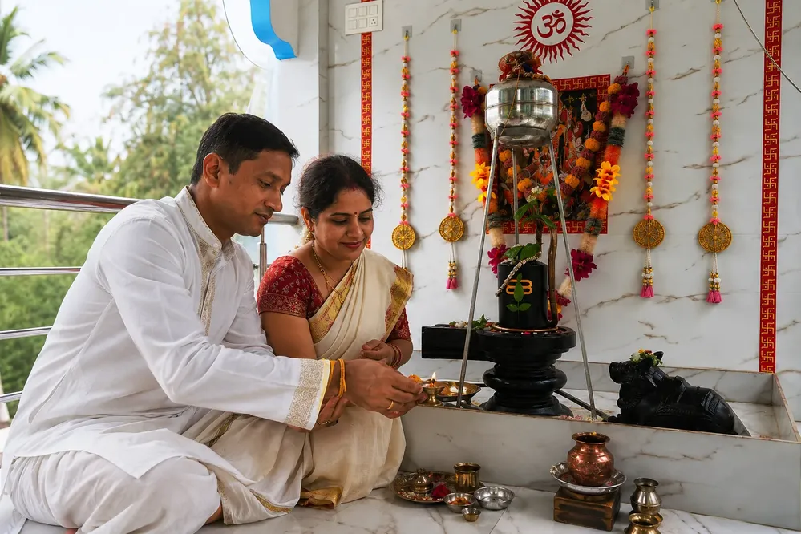

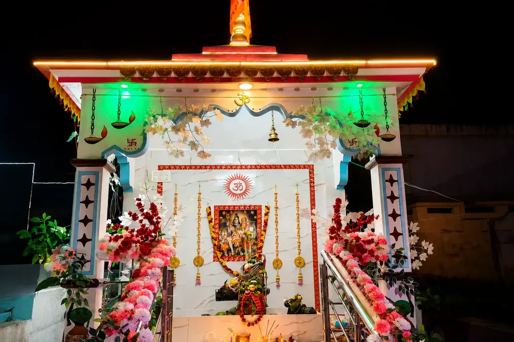


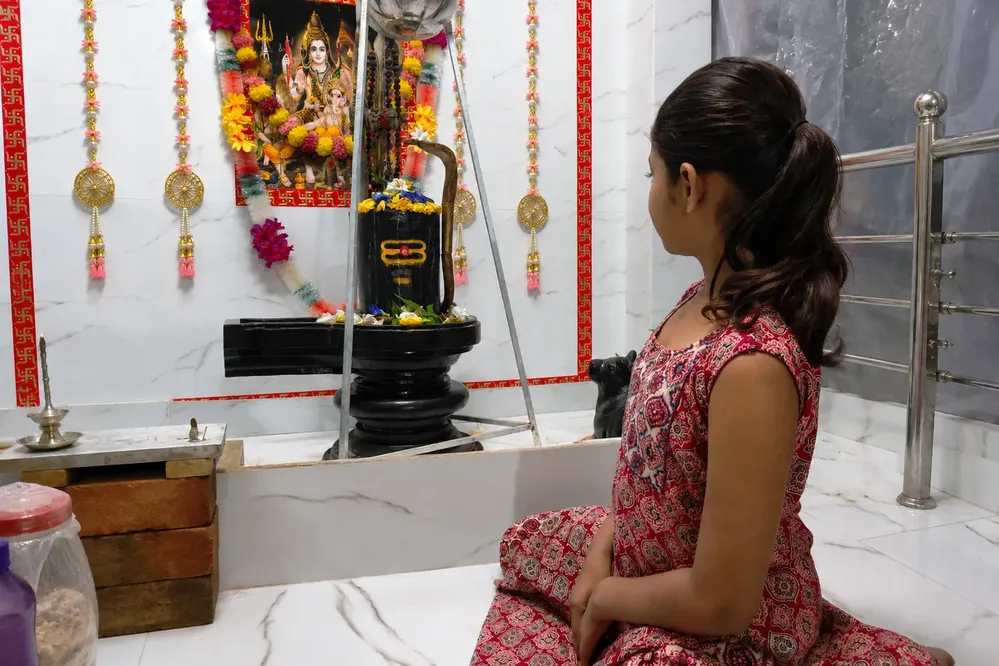

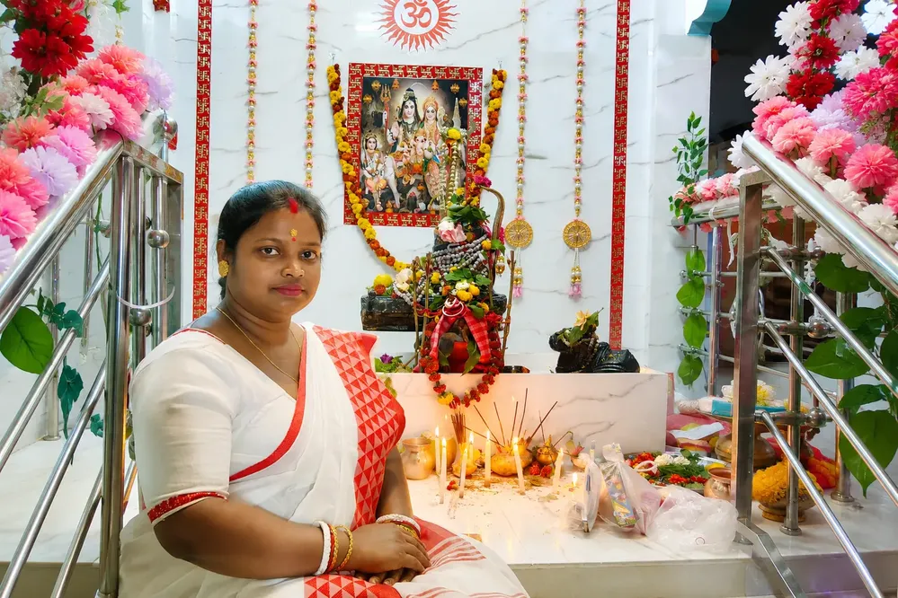
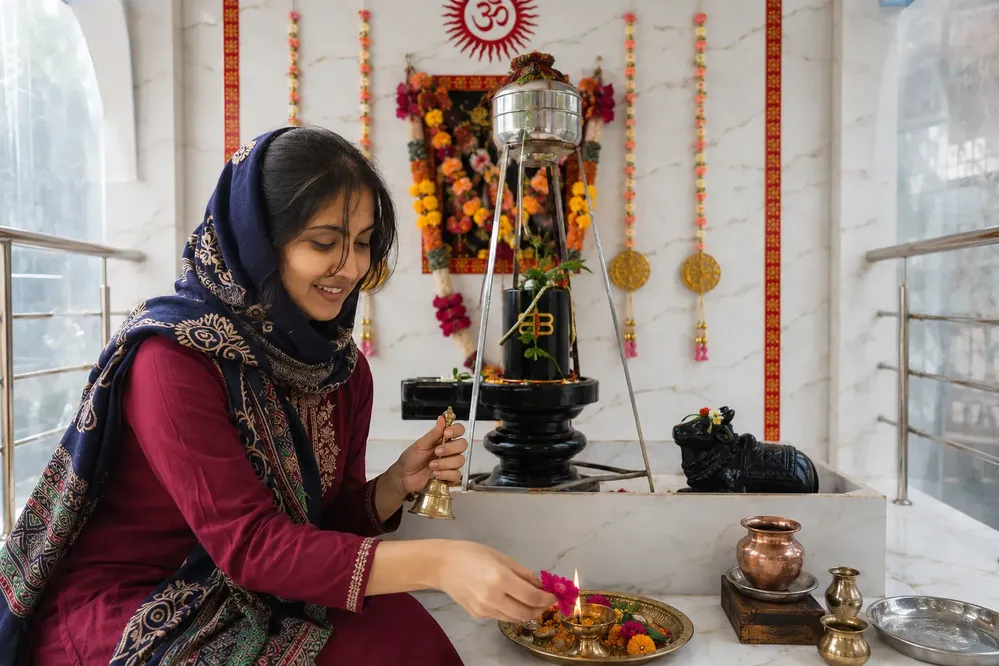


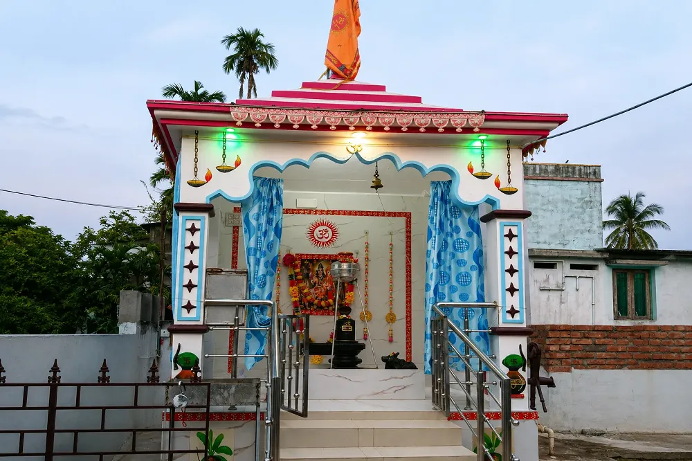

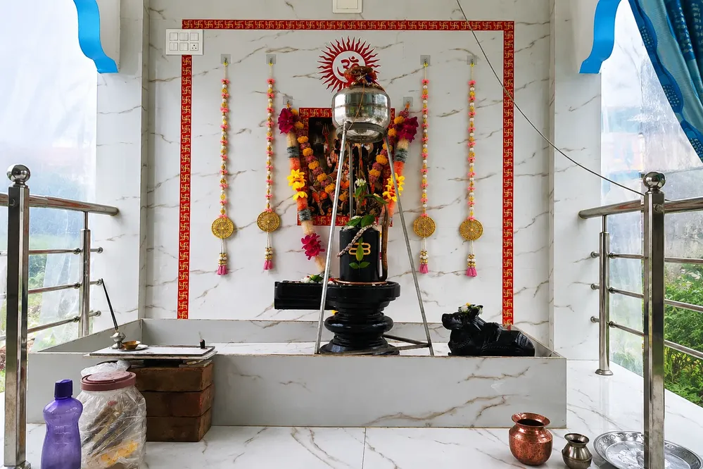
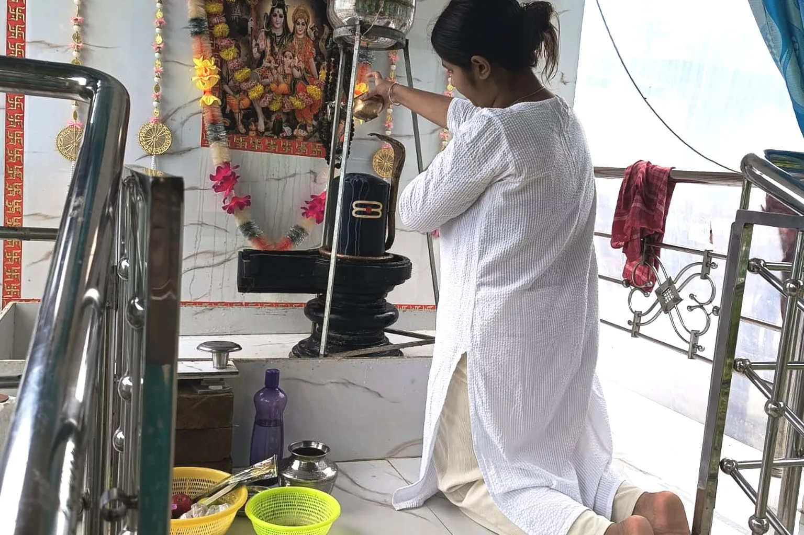
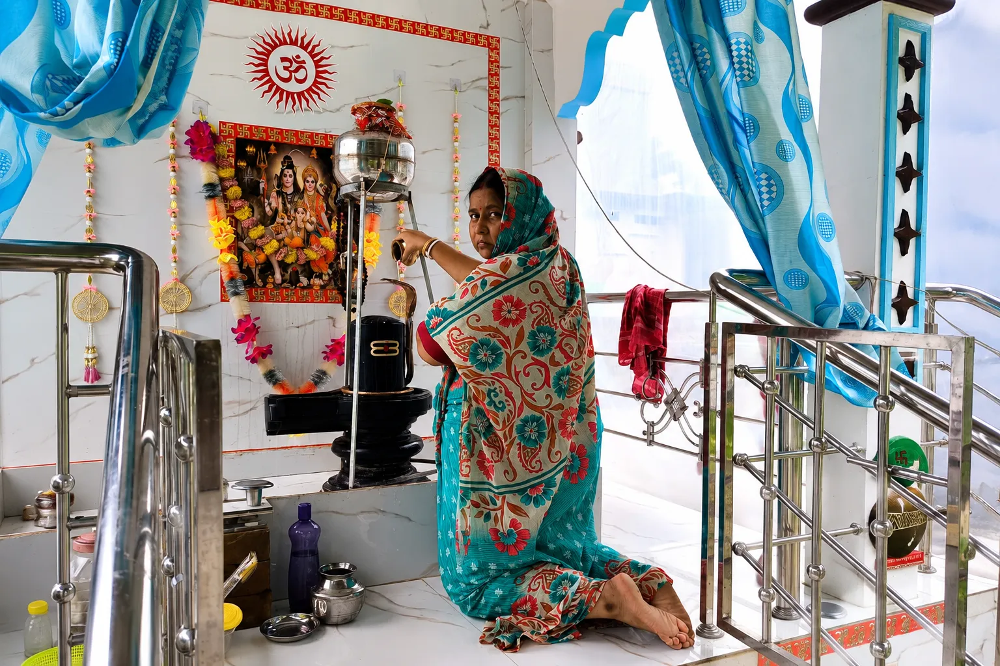
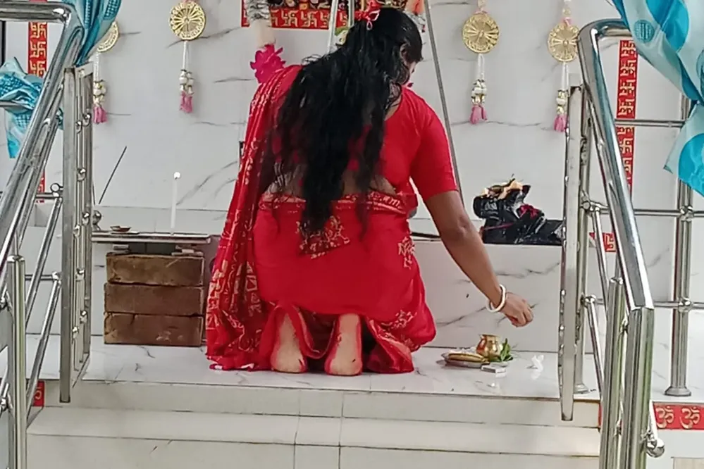
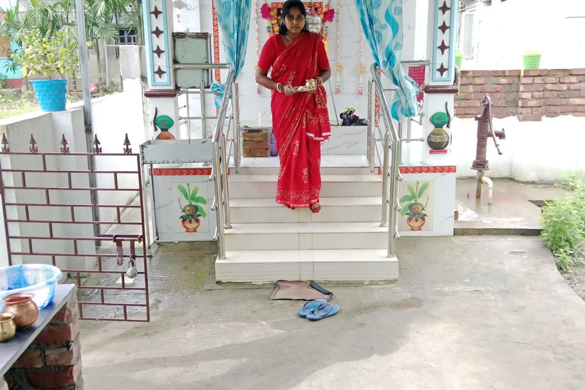
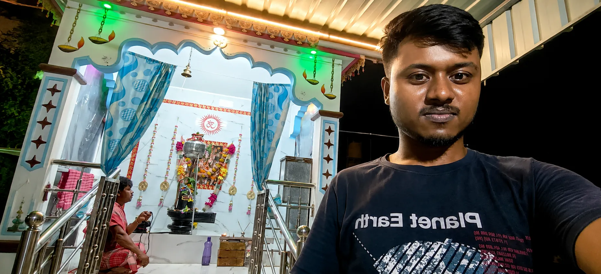
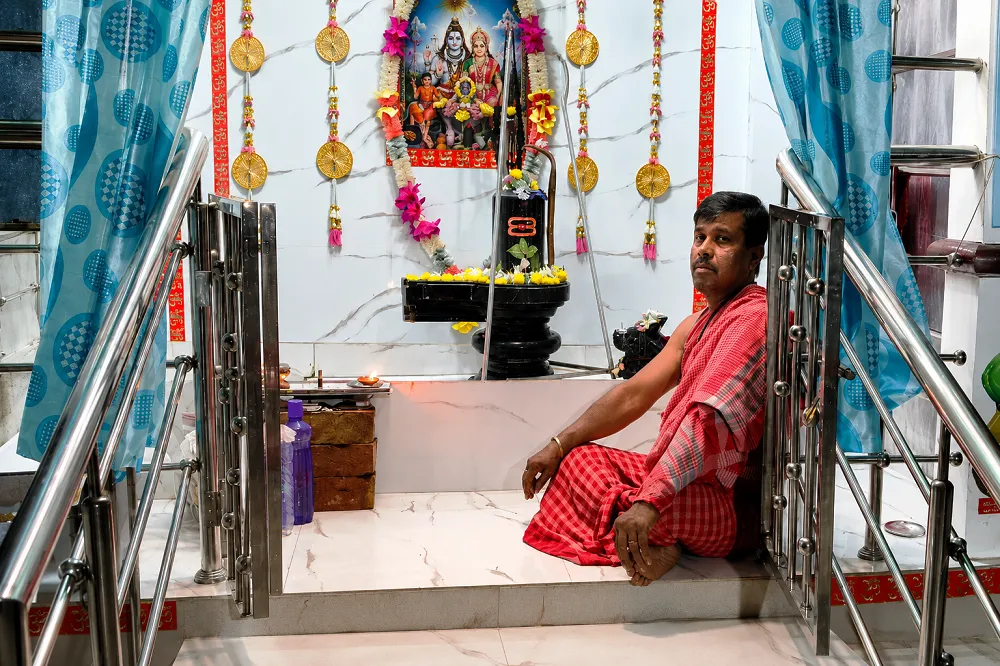
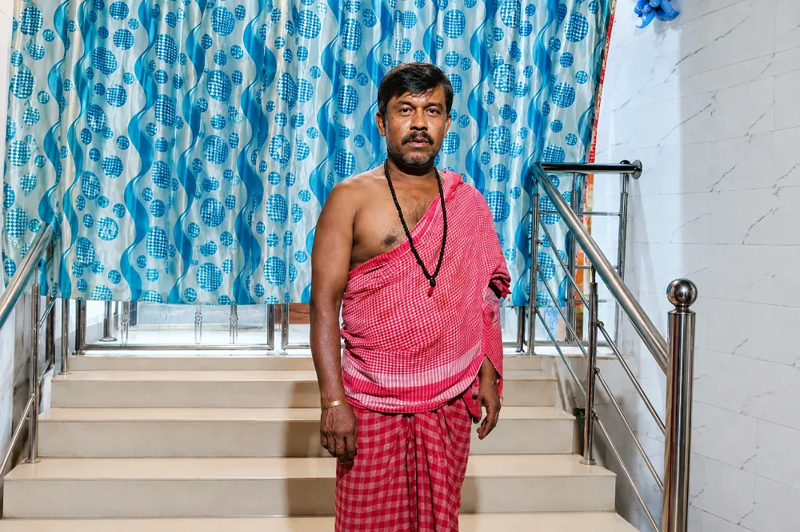
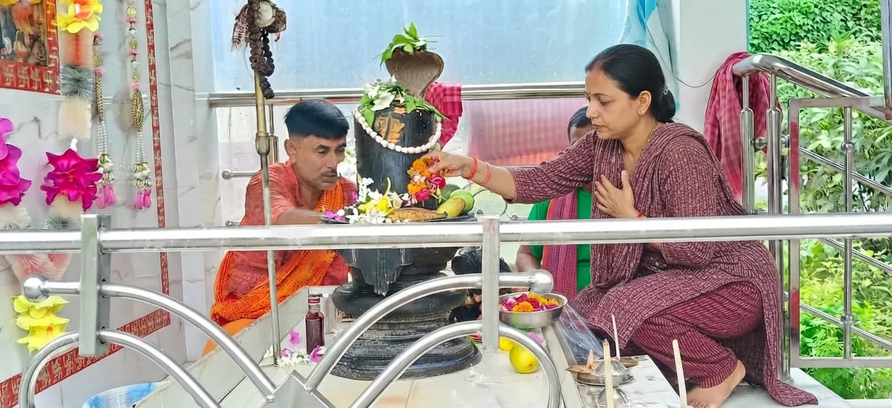